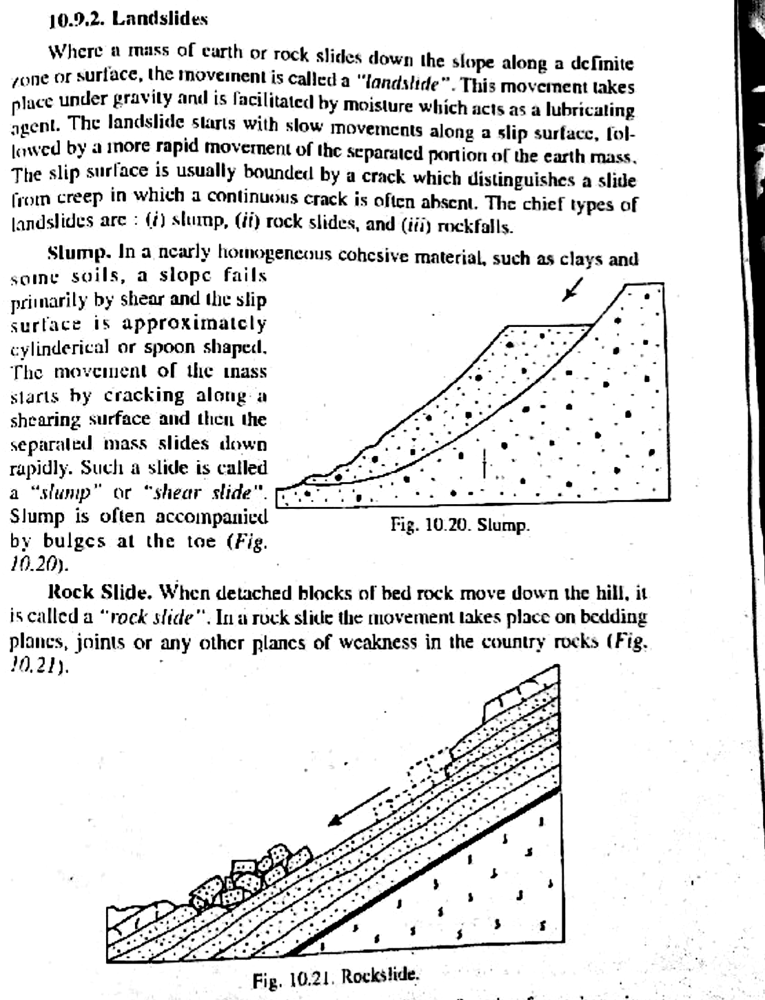
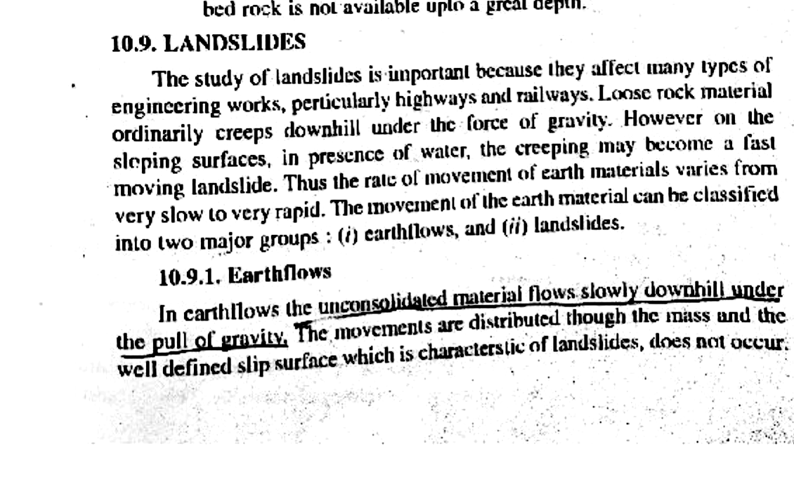

Q001: Slope Stability, Mass Movement vs. Landslide & Shear Plane Mechanics
In physical geology and geotechnical engineering, the downslope displacement of rock, regolith, and soil under gravitational body forces is collectively designated as mass movement (or mass wasting). However, engineering geology and slope mechanics establish a fundamental physical demarcation based on whether movement occurs by diffuse internal deformation or is localized along a discrete, well-defined shear failure plane (Varnes, 1978; Cruden & Varnes, 1996; Bangar, Chapter 10).
In contrast, when earth materials deform without a discrete basal shear surface, the movement falls into other kinematic categories such as earthflows or soil creep:
A landslide is mechanically triggered when the gravitational driving shear stress along a potential failure surface exceeds the shear strength of the geomaterial. The available shear strength ($\tau_f$) is governed by the Terzaghi Effective Stress Mohr-Coulomb criterion:
Where:
- $c'$ = Effective cohesive intercept of the rock or soil mass ($\text{kPa}$ or $\text{MPa}$).
- $\sigma_n$ = Total normal stress acting perpendicular to the failure plane ($\sigma_n = \gamma \cdot z \cdot \cos^2 heta$).
- $u$ = Pore water pressure ($\text{kPa}$), which reduces effective confining stress ($\sigma_n' = \sigma_n - u$).
- $\phi'$ = Effective angle of internal friction ($\text{degrees}$).
The stability of any slope is quantitatively evaluated via the Factor of Safety ($FS$):
$$FS = \frac{\text{Resisting Shear Strength } (\tau_f)}{\text{Driving Shear Stress } (\tau_d)} = \frac{c' + (\sigma_n - u) \tan \phi'}{\tau_d}$$When $FS > 1.0$, the slope is stable; when $FS = 1.0$, limit equilibrium exists; and when $FS < 1.0$, catastrophic shear failure initiates along the rupture surface.
Below are the direct high-resolution scans from K.M. Bangar establishing the exact verbatim wording and cross-sectional geometries:



| Movement Type | Shear Rupture Plane | Kinematic Mechanism | Velocity Range | Diagnostic Field Features |
|---|---|---|---|---|
| True Landslide (Sensu Stricto) | Discrete, well-defined shear plane | Shear failure ($\tau > \tau_f$); rotational slump or translational block glide | Meters/hour to meters/second | Arcuate crown scarp, transverse tension cracks, hummocky toe |
| Mass Movement (Sensu Lato) | Variable (Often diffuse or absent) | Umbrella term encompassing falls, topples, slides, spreads, flows | $10^{-6}\text{ m/s}$ to $>50\text{ m/s}$ | Broad geomorphic degradation across entire slopes |
| Soil / Rock Creep | Absent (Internal distributed strain) | Continuous low-stress viscous deformation; cyclic wetting/drying ratcheting | $< 1\text{ to } 10\text{ mm/year}$ | J-shaped tree trunks, tilted utility poles, displaced retaining walls |
| Earthflow / Mudflow | Absent (Internal fluid mixing) | Viscous fluid flow of saturated fine-grained sediment; loss of shear strength | $0.01\text{ m/s}$ to $10\text{ m/s}$ | Hourglass planform, lateral shear levees, lobate depositional snout |
| Debris Avalanche | Basal air cushion / Granular flow | Fluidized granular dispersion, trapped air cushion lubrication | $> 30\text{ to } 100\text{ m/s}$ | Catastrophic runout distance ($H/L < 0.2$), shattered block hummocks |
-
Practice Q1 (Numerical): A planar rockslide is threatened along a joint dipping at $\alpha = 30^\circ$ into a valley. The rock block has a total weight $W = 500\text{ kN}$ and basal contact area $A = 20\text{ m}^2$. The joint properties are $c' = 10\text{ kPa}$ and $\phi' = 28^\circ$. If water pressure is negligible, calculate the Factor of Safety ($FS$) against sliding.
✔ Worked Answer: $FS = 1.01$ (Limit Equilibrium / Imminent Failure)Detailed Proof:
Normal force $N = W \cos \alpha = 500 \cos 30^\circ = 433.01\text{ kN}$.
Normal stress $\sigma_n = N / A = 433.01 / 20 = 21.65\text{ kPa}$.
Driving shear force $T = W \sin \alpha = 500 \sin 30^\circ = 250\text{ kN}$.
Driving shear stress $\tau_d = T / A = 250 / 20 = 12.50\text{ kPa}$.
Resisting shear strength $\tau_f = c' + \sigma_n \tan \phi' = 10 + 21.65 \tan 28^\circ = 10 + 21.65(0.5317) = 10 + 11.51 = 21.51\text{ kPa}$.
Resisting force $R = \tau_f \cdot A = 21.51 \times 20 = 430.2\text{ kN}$.
$$FS = \frac{R}{T} = \frac{c' A + W \cos \alpha \tan \phi'}{W \sin \alpha} = \frac{10(20) + 433.01(0.5317)}{250} = \frac{200 + 230.23}{250} = \frac{430.23}{250} \approx 1.72$$ Note: If cohesive bond is destroyed ($c'=0$), $FS = \frac{\tan \phi'}{\tan \alpha} = \frac{\tan 28^\circ}{\tan 30^\circ} = \frac{0.5317}{0.5774} = 0.92$ (Catastrophic collapse occurs). -
Practice Q2: What is the primary kinematic difference between a rotational landslide (slump) and a translational landslide?
✔ Correct Answer: Geometry of the failure plane (Curved concave-upward vs. planar structural discontinuity).Explanation: In a rotational slump, the slip surface is spoon-shaped (concave upward), producing a backward rotation of the displaced block toward the scarp. In a translational slide, the slip surface is planar or undulating, often guided by structural weaknesses (bedding, joints, foliation), and the block moves parallel to the plane without rotational tilting.
-
Practice Q3: How does an increase in pore water pressure ($u$) trigger slope failure according to Terzaghi's effective stress principle?
✔ Correct Answer: By reducing effective normal stress ($\sigma_n' = \sigma_n - u$), which directly decreases frictional resistance ($\tau_f$).Explanation: Water pressure exerts an outward buoyant pore pressure that pushes geomaterial grains apart. Since frictional resistance is proportional to grain-to-grain contact force ($\sigma_n' \tan \phi'$), increasing $u$ reduces $\sigma_n'$ without changing the gravitational driving stress $\tau_d$, thereby driving $FS < 1.0$.
-
Practice Q4: In a dry, cohesionless granular material (e.g., dry clean sand), what governs the maximum stable slope angle?
✔ Correct Answer: The angle of internal friction of the material ($\alpha_{max} = \phi'$), universally termed the angle of repose.Explanation: For $c'=0$ and $u=0$, $FS = \frac{\tan \phi'}{\tan \alpha}$. The slope remains stable ($FS \ge 1.0$) as long as the slope inclination $\alpha \le \phi'$. The angle $\phi'$ defines the natural angle of repose.
-
Practice Q5: In the Varnes (1978) classification of slope movements, what two primary parameters form the orthogonal classification axes?
✔ Correct Answer: Type of movement (fall, topple, slide, spread, flow) and Type of material (bedrock vs. engineering soil/debris/earth).Explanation: The Varnes matrix establishes 5 kinematic movement mechanisms along the horizontal axis and 2 primary geomaterial types (Rock and Soil, subdivided into coarse Debris and fine Earth) along the vertical axis.
-
Practice Q6: What engineering mitigation technique addresses the root cause of rainfall-induced translational landslides along planar joints?
✔ Correct Answer: Horizontal sub-surface drainage holes and toe drainage to dissipate pore water pressure ($u$).Explanation: Drainage lowers the phreatic surface, dissipating $u$ and restoring effective normal stress ($\sigma_n'$). Dewatering is universally recognized in geotechnical engineering as the most cost-effective stabilization method.
-
Practice Q7: Curved, pistol-butted tree trunks (J-shaped trunks) and tilted fence posts on a grassy hillside are classic field diagnostics of which process?
✔ Correct Answer: Soil creep (continuous creep).Explanation: Because soil creep is fastest at the ground surface and decreases with depth, the root base moves slower than the upper trunk. Trees continually attempt to grow phototropically vertically, creating curved trunks.
-
Practice Q8: Why is day-lighting of bedding planes in a road-cut slope considered the most dangerous structural condition in civil excavations?
✔ Correct Answer: It removes kinematic lateral support at the toe, allowing the block to slide unhindered along the bedding plane into the cut.Explanation: When bedding planes dip in the same direction as the hill slope at an angle less than the cut slope ($\alpha_{bed} < \alpha_{cut}$), the plane "daylights" into the open cut. Frictional resistance alone must hold the entire weight; if $\alpha_{bed} > \phi'$, instantaneous planar block sliding occurs.